Forthcoming Project · 2026
A Photographic Portrait of a Virgin Prairie
I live with aphantasia — a condition in which the mind produces no visual images. When I close my eyes, there is nothing to see. I cannot conjure a face, a room, or a landscape I love.
My camera is not a creative accessory. It is an extension of memory itself. Every photograph I take is the only way I will ever see that moment again.
Remnant is a photographic project centered on one of the rarest ecosystems in North America — a protected virgin prairie, a fragment of something that once covered an entire region, now almost entirely gone. I photograph it the way my condition requires me to photograph everything I love: as if I will never see it again.
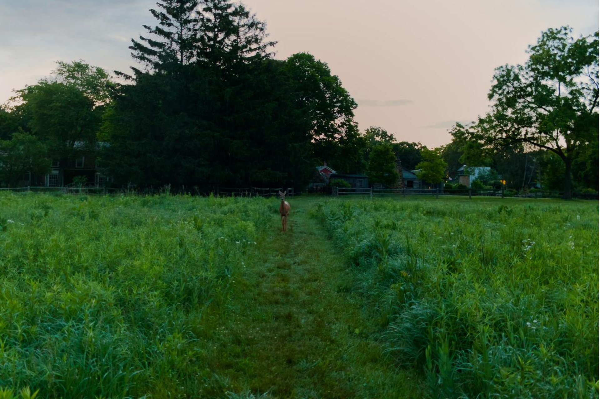
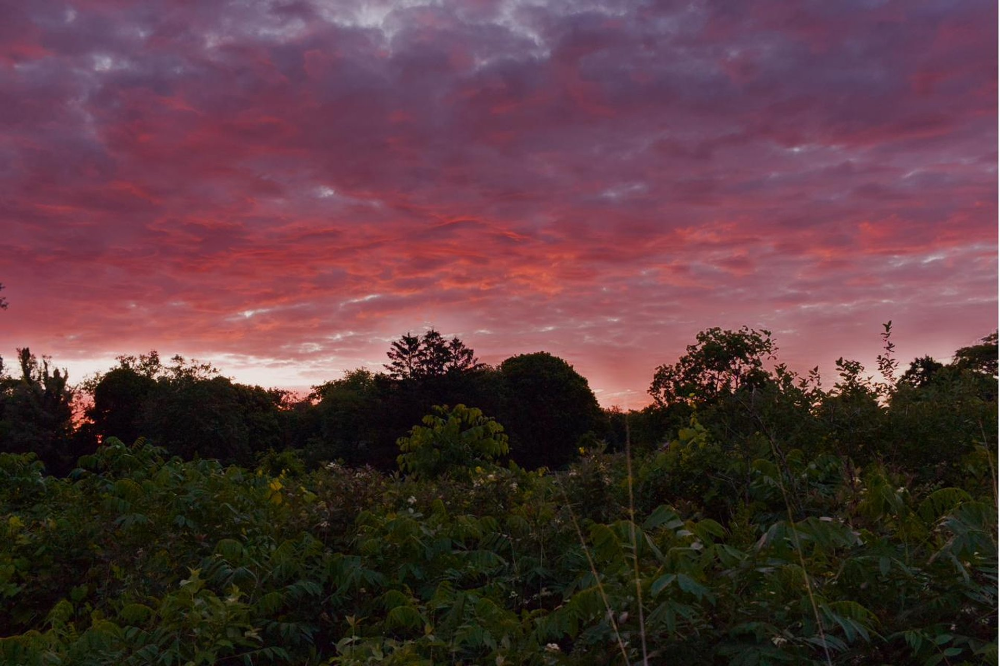
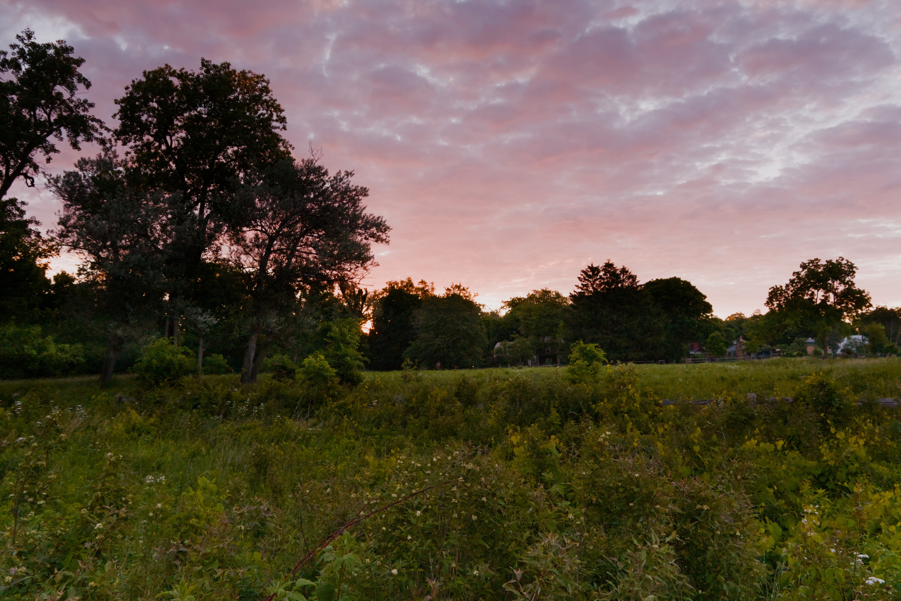
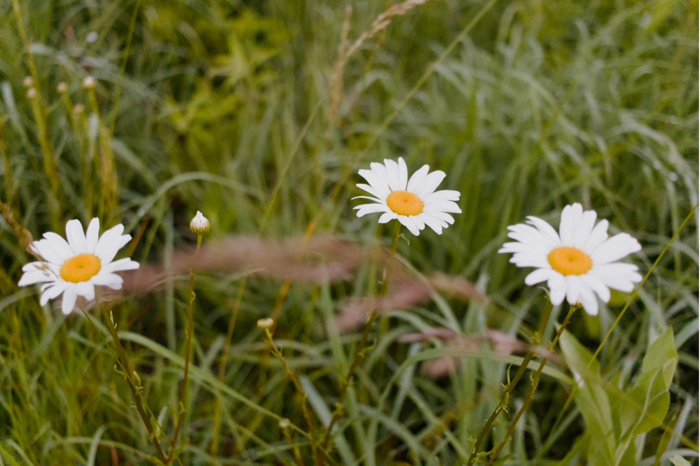
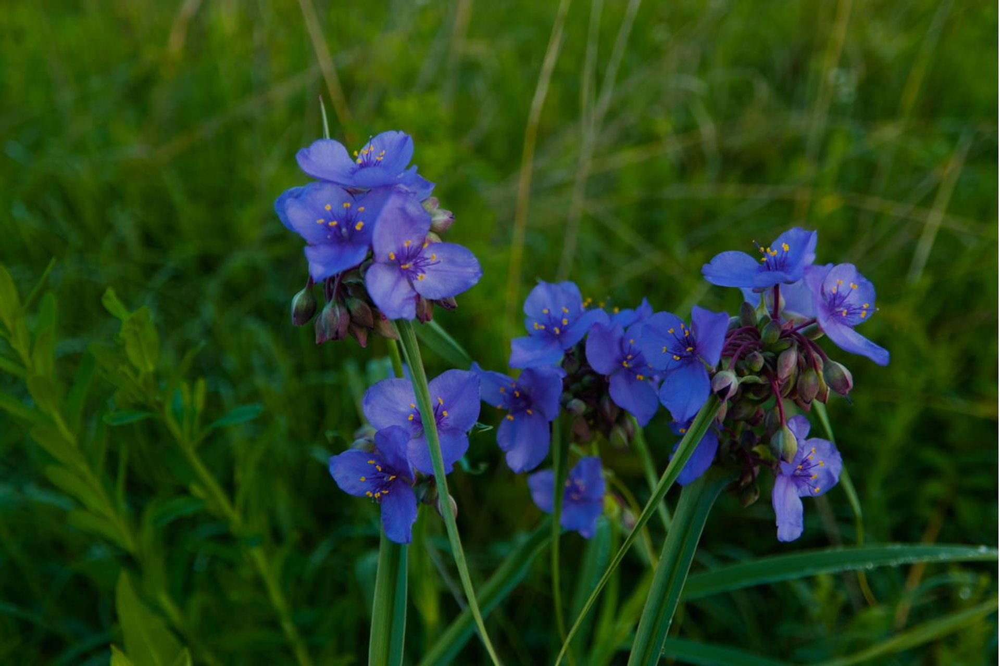
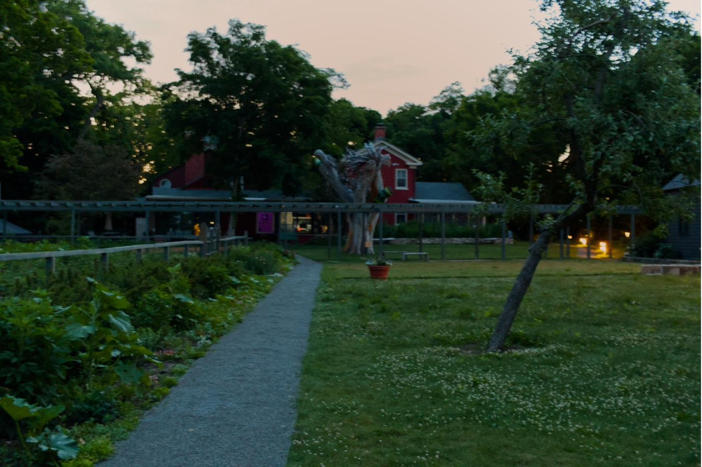
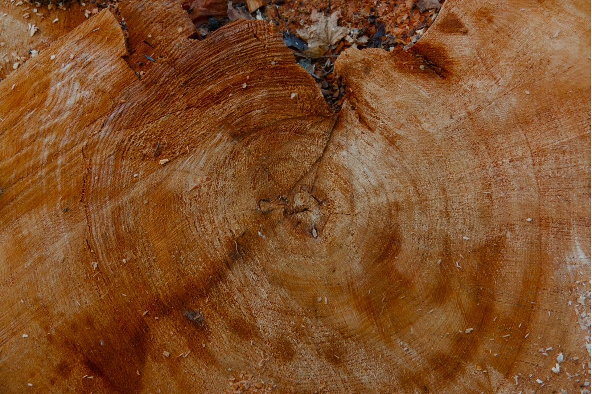
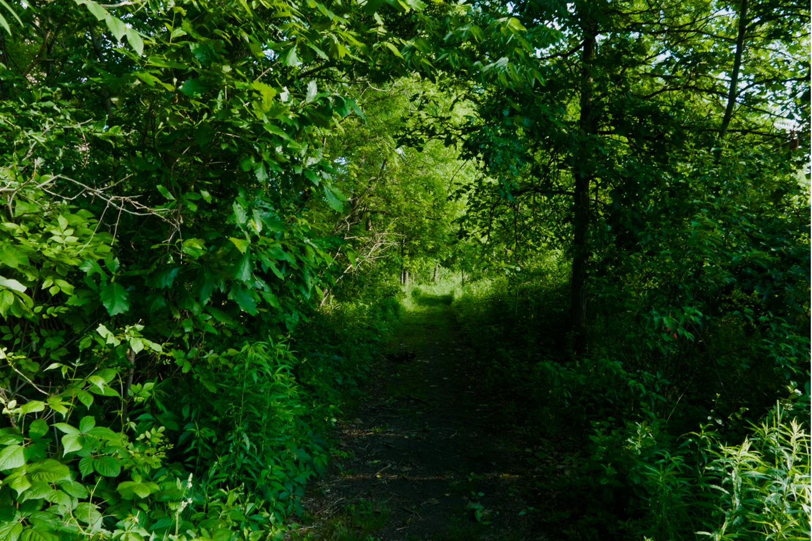
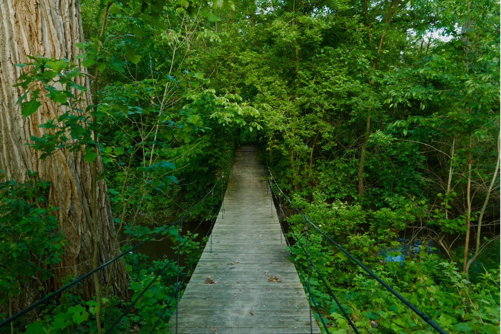
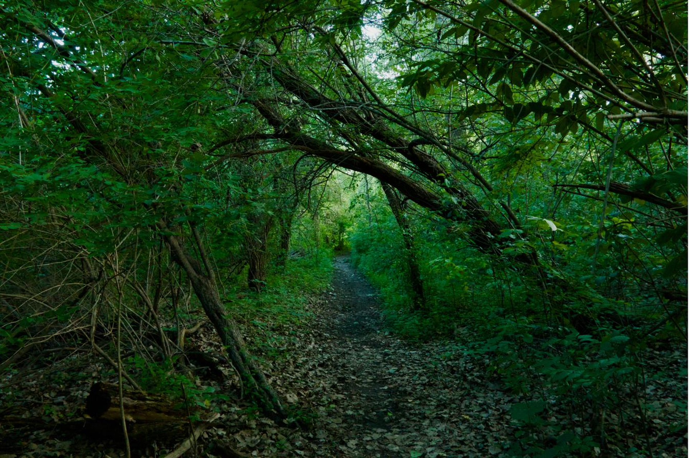
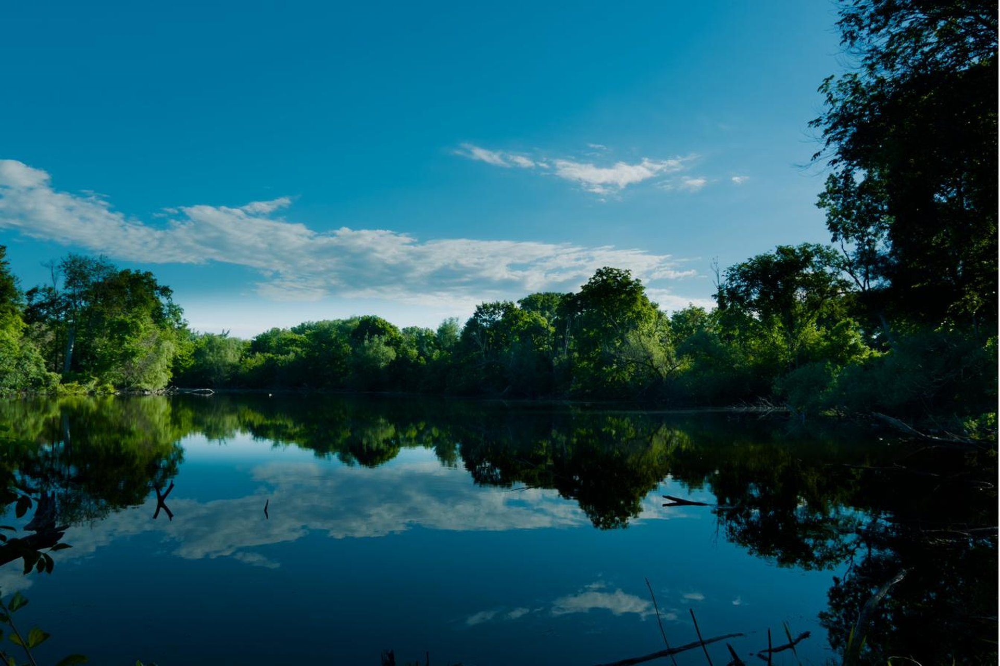
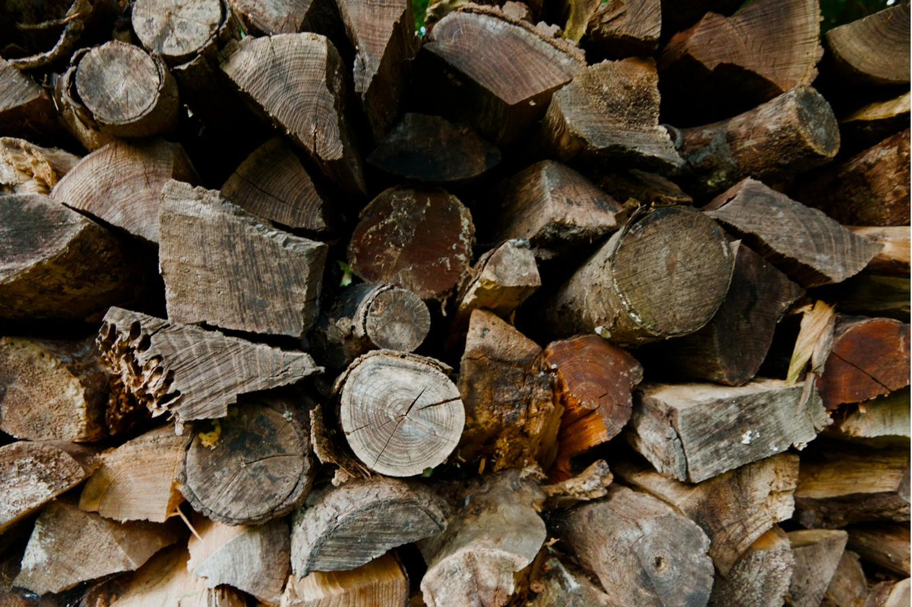
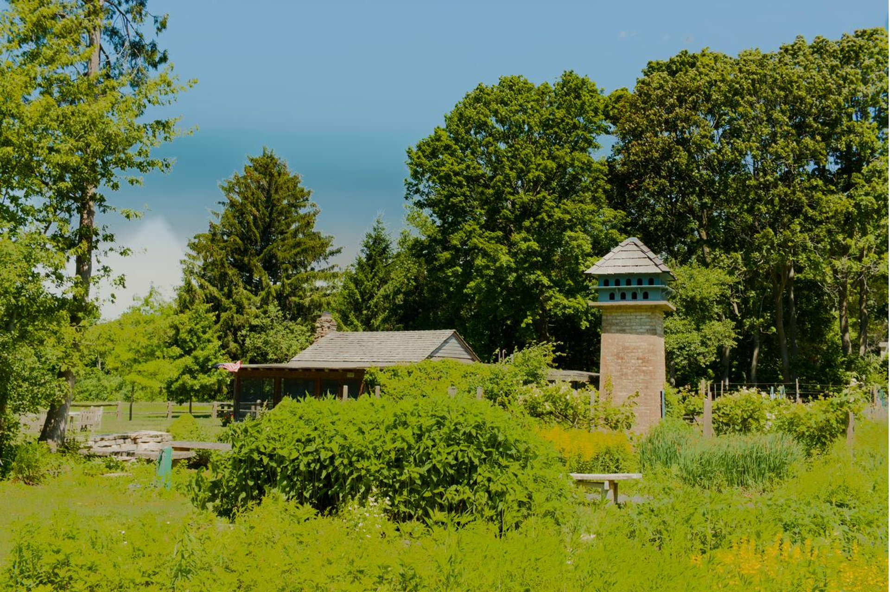
These photographs were made in the early morning hours of June 13, 2026 — before dawn, through golden hour, into full morning light. Remnant is a project in active development. An application for artist residency at the site has been submitted.